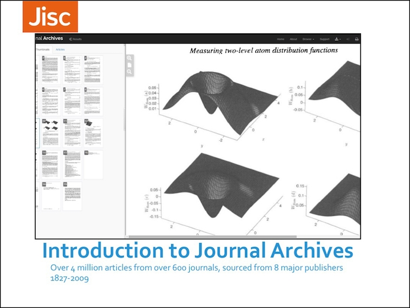

For a quick tour of the key features available please watch our short introductory video.
This video will give you an overview of using Journal Archives on the iPad (3 mins 51 sec)
If you don't have 4 minutes to spare, catch the basics of using Journal Archives in these narrated bitesize videos (with subtitles)
To help you get started using Journal Archives you can view our Quick Reference Guide page.
We've also made a version in the PDF format, that you can download for offline working should you wish: Quick Reference Guide (offline version) (PDF, 1118KB).
An introduction to Journal Archives presentation is available as a PPT (5.7MB) or a PDF (3MB) .
